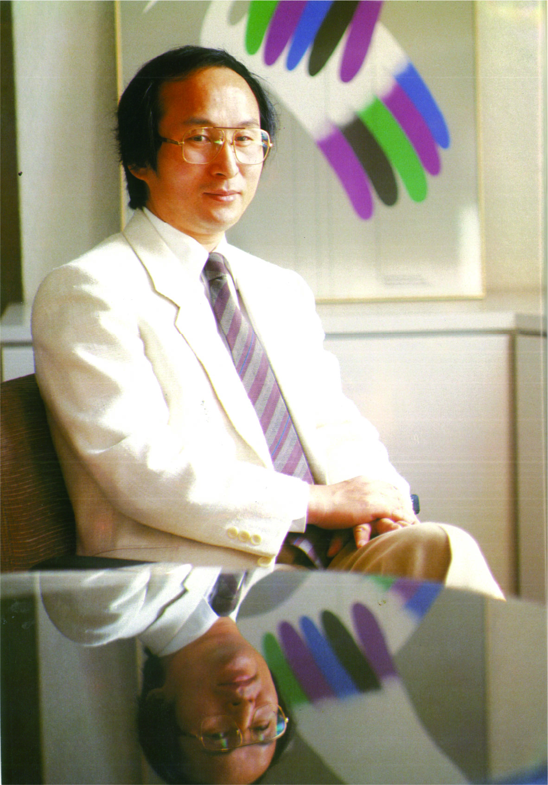

차분함 속에 배어있는 매서운 감각
안정언은 1980년대 국내 아이덴티티 디자인 분야에서 활발하게 활동한 디자이너로, 특히 제일은행 CI 작업을 통해 기업 이미지와 시각 전략의 중요성을 보여주었다. 당시 은행들은 보수적이고 안정적인 이미지를 중시했기 때문에 새로운 CI를 도입하는 과정은 쉽지 않았다. 그러나 그는 단순히 로고를 바꾸는 것이 아니라, 기업의 성격과 방향을 시각적으로 정리하는 작업으로 CI를 바라보았다.
제일은행 CI 작업에서는 기존의 딱딱하고 무거운 이미지를 벗어나, 현대적이고 신뢰감 있는 시각 이미지를 만드는 데 집중했다. 그는 은행의 역사와 성격, 고객이 느끼는 인상, 앞으로의 변화 가능성을 함께 고려하며 디자인을 진행했다. 이 과정에서 단순히 아름다운 형태를 만드는 것보다 기업의 정체성을 정확히 전달하는 것이 중요하다고 보았다.
또한 안정언은 디자이너에게 필요한 태도로 관찰력과 책임감을 강조했다. 그는 디자인이 개인의 감각만으로 완성되는 것이 아니라, 사회와 산업, 사람들의 생활을 이해하는 과정에서 만들어진다고 보았다. 특히 아이덴티티 디자인은 기업의 얼굴이 되는 작업이기 때문에, 겉모습의 장식보다 본질을 파악하는 태도가 중요하다고 말한다.
교육자로서의 안정언은 학생들에게 정답을 알려주기보다 스스로 고민하고 발견할 수 있는 태도를 길러주고자 했다. 그는 학생들이 단순히 기술을 익히는 데 그치지 않고, 자신의 생각과 감각을 바탕으로 디자인을 바라보길 원했다. 디자인은 유행을 따라가는 일이 아니라, 자신만의 관점으로 문제를 발견하고 해결하는 과정이라는 점을 강조했다.